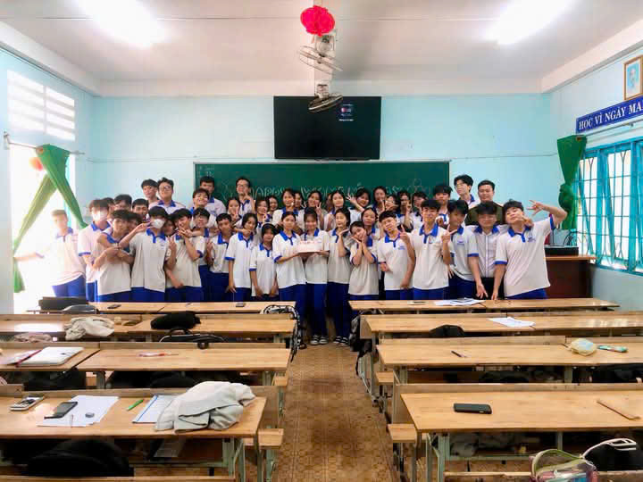
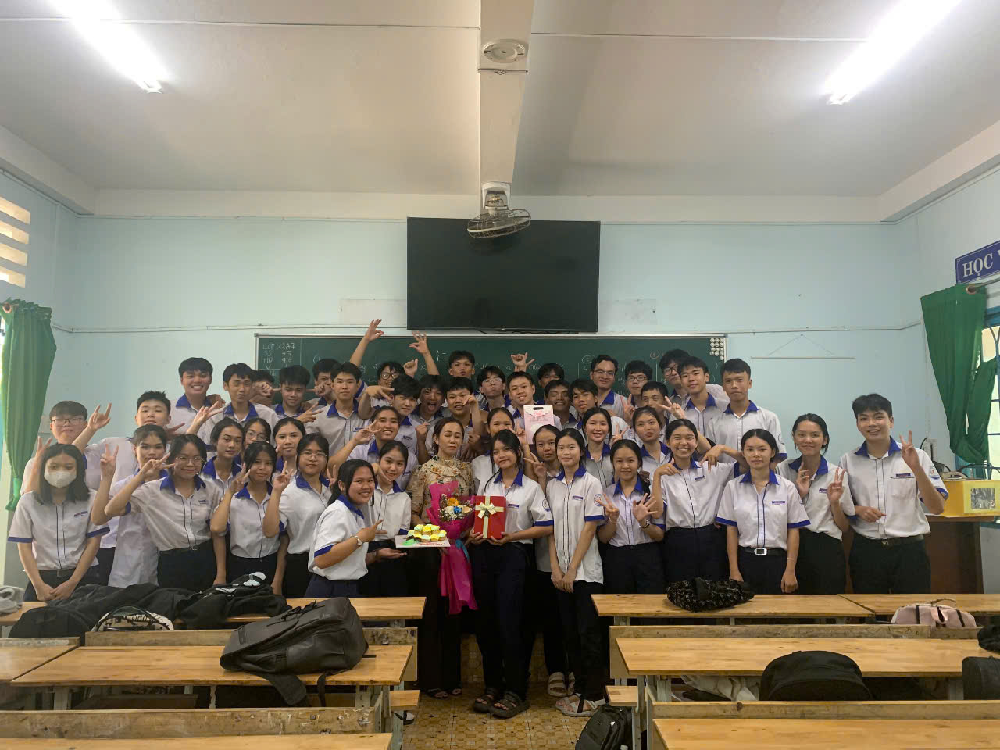

Ba năm trung học với nhau tại trường Nguyễn Huệ là hành trình thanh xuân đầy ắp những cảm xúc, nơi mỗi khoảnh khắc đều đáng nhớ và đáng trân trọng. Chính từ những cảm xúc hồn nhiên, trong trẻo ấy, Khung Cảm Xúc ra đời, mang trong mình sứ mệnh lưu giữ và lan tỏa những câu chuyện thanh xuân của mỗi người. Đó là những buổi học vội vàng, những tiếng cười rộn rã bên bạn bè, hay những lần vụng dại với những rung động đầu đời. Trang web này không chỉ là nơi lưu giữ ký ức, mà còn là không gian để chúng ta cùng nhau sống lại những năm tháng đẹp đẽ nhất cuộc đời.Hãy để Khung Cảm Xúc cùng bạn viết tiếp câu chuyện thanh xuân rực rỡ ấy!
 